城市發展要繼續，生活品質也要顧
龍子里這幾年一直在改變。新的大樓、新的住戶、大型商場開發陸續進來；捷運與輕軌帶來便利，也帶來新的車流、施工衝擊與停車問題。大步發展的同時，居民的生活品質必須有人為大家守護。
曾偉修不是第一次投入龍子里的公共事務。四年前第一次參選龍子里里長，獲得 1,545 位鄉親 的溫暖支持。這四年來，偉修沒有把那 1,545 票只當成一個選舉數字，而是一直深刻記得，那代表著 1,545 份曾經交付的信任。
人生走過軍旅、第一線業務、海外工作、企業管理、創業、公共事務與社區服務，也曾經歷過人生不同階段的高低起伏。 18 歲入伍服役，退伍時獲頒空軍總司令獎狀；退伍後進入職場，曾任味之素營業工作，也曾長期派駐馬來西亞電子產業擔任管理職約 15 年，期間積極參與當地台商公共事務；之後前往中國舟山從事冷凍水產產業管理工作。
後來因孩子早產，人生的重心重新回到台灣，也開啟了另一段創業人生。返台後投入通訊產業，曾經營多家通訊門市；2021 年再創立自己的精品咖啡品牌。工作之餘，長期參與地方民防與公共事務，曾擔任立法委員服務處助理，親身接觸地方陳情、政府部門協調與公共議題爭取。
「很多事情不一定能一步到位，但有人願意接、願意追、願意把事情處理到有結果，就會不一樣。」
2026 年，再次投入龍子里里長選舉。這一次選擇回到最單純的地方服務，希望把過去累積的工作經驗、協調能力與人生歷練，毫無保留用在自己每天生活的社區。
龍子里這幾年一直在改變。新的大樓、新的住戶、大型商場開發陸續進來；捷運與輕軌帶來便利，也帶來新的車流、施工衝擊與停車問題。大步發展的同時，居民的生活品質必須有人為大家守護。
老社區的長輩關懷、學童通學安全、道路坑洞修補、路燈照明、排水防汛與噪音治安。里長做的事情往往不轟轟烈烈，可能只是一盞燈、一個坑洞，但對當事的里民來說，那就是最重要的事情。
這一次再給自己一次機會，不是為了證明四年前的選擇，而是希望讓大家看見：龍子里除了現在的樣子，也可以有更有效率、更有溫度、更透明專業的里政服務。
公園、學校、捷運、輕軌、商業生活圈、水岸與住宅在這裡交會。城市越來越便利，也讓交通、人行、停車、開發與生活品質，成為居民每天真正會遇到的地方議題。
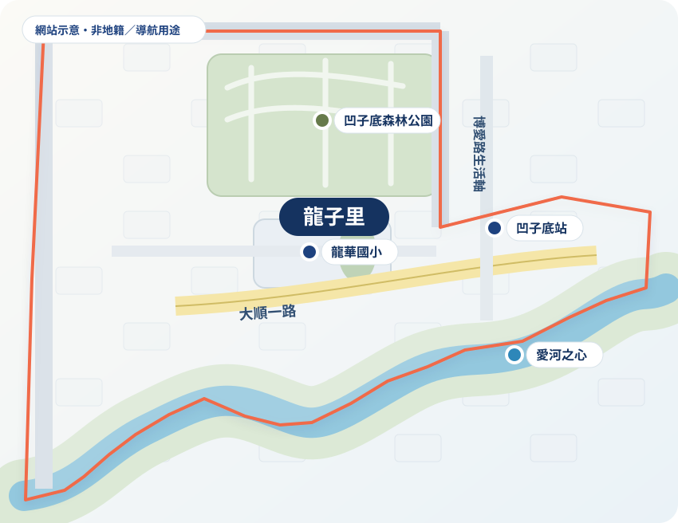
凹子底森林公園優質生活圈
龍華國小周邊安全通學動線
捷運、輕軌與大順一路重要交通樞紐
富民、明誠周邊熱絡商圈與生活機能
愛河之心水岸綠帶與靜謐大樓街廓


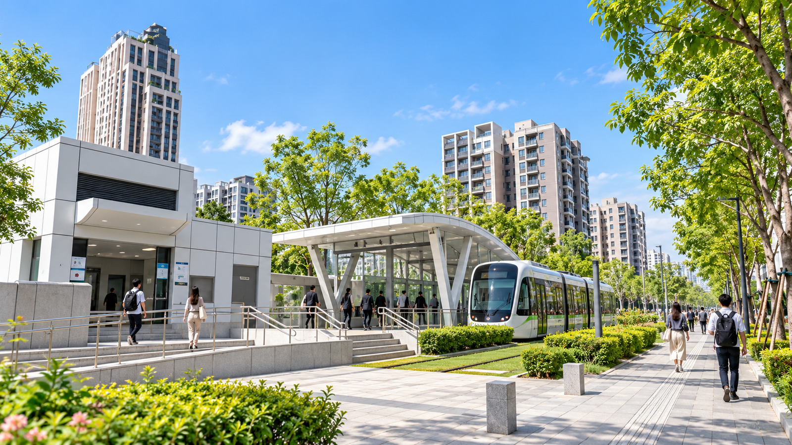


不喊口號、不開空頭支票，從每天出門遇到的第一步開始，實踐看得見、感受得到的改變。
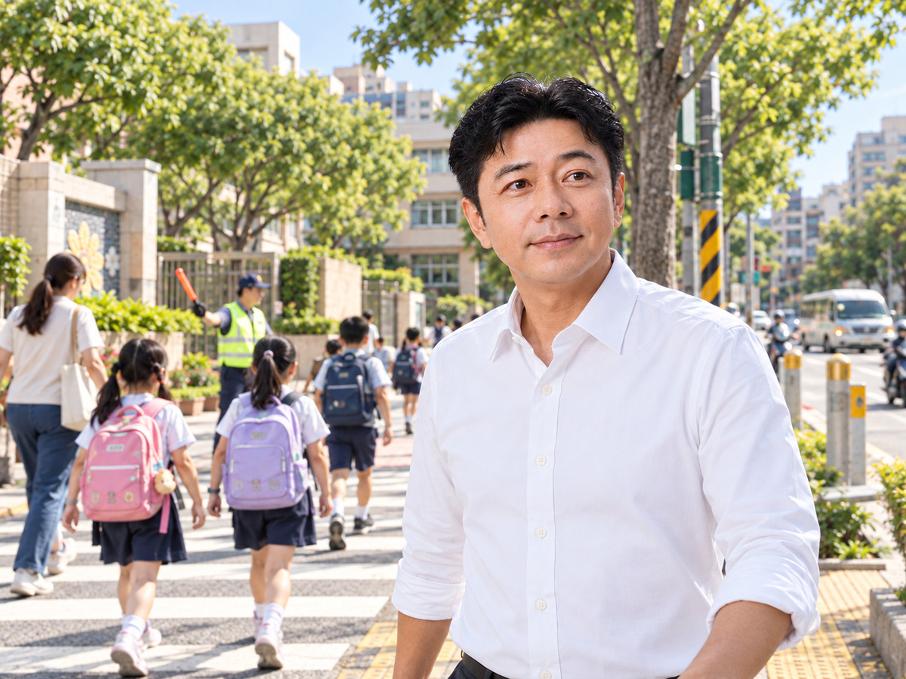
守護學童通學動線與行人通行安全，改善各路口視線死角與標線退縮，完善捷運、輕軌站點周邊步行與轉乘環境。
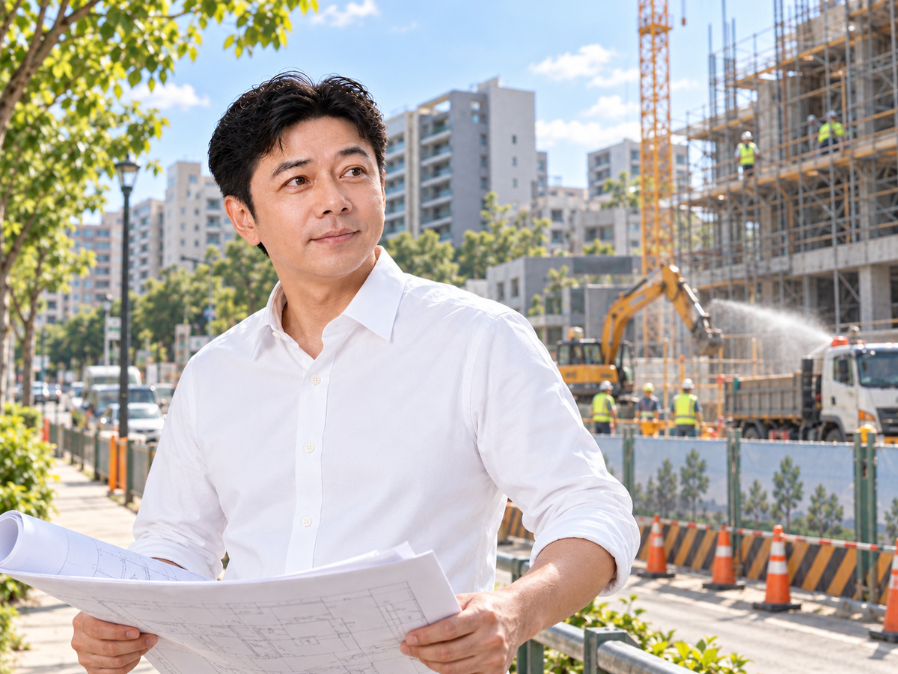
緊盯富邦漢神商場等大型工程開發案，督促工程車進出動線、降低施工噪音與揚塵，主動為周邊大樓爭取居住安寧與停車配套。
全力協助長照與社福資源對接；發揮通訊產業背景，定期開辦長輩智慧型手機教學、AI 日常應用與防詐騙實用宣導課程。
運用十餘年龍華派出所民防隊實務經驗，巡查並爭取改善暗巷夜間照明，加強社區大樓巡守互助網絡，讓夜歸里民更放心。
建立反映事項專人受理、進度追蹤與透明回覆機制；主動走訪社區管委會，針對大樓共同課題攜手向市府單位協調解決。
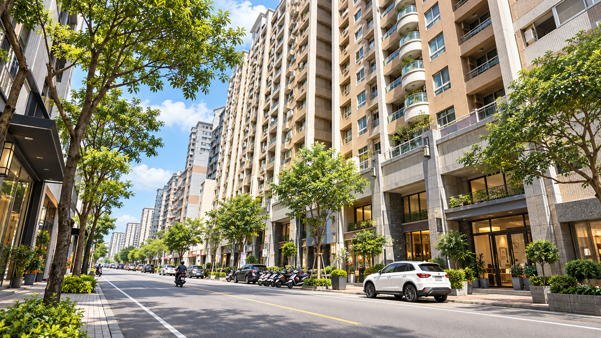
落實鄰里道路坑洞巡查即通報、雨季前側溝深度清淤防汛、行道樹定期巡檢修剪，為龍子里全體居民維持整潔健康的公共環境。
龍子里不只有眼前的課題，更有未來十年的發展機遇。偉修規劃八大中長期面向，攜手全體居民打造兼具生活質感與韌性溫度的模範社區。
捷運、輕軌樞紐串聯完整的人本步行綠廊，學童通學動線零障礙。
大型商業購物中心進駐同時，健全周邊車流導引與安寧居住品質。
完善社區在地安老支持體系，推動跨世代青銀共融互助生活圈。
建立側溝定期檢修標準作業，強化極端氣候強降雨即時因應能力。
串聯愛河之心與凹子底公園生態水岸，提升居民日常散步休閒品質。
建立跨大樓管委會定期交流平台，集結社區力量爭取市政資源。
活化社區閒置角落，全面檢視老舊暗巷路燈，落實夜歸安全感。
LINE 官方反映直通里長，報修進度透明化、公眾事務公開說明。
曾偉修持續訪談里民、專家學者與社區管委會，匯集具體建議，完整版白皮書即將公佈，敬請期待！
接獲里民反映美術東五路部分路面有裂損、凹陷坑洞，影響行車與機車騎乘安全。偉修親自到場巡視勘查，並第一時間向高雄市政府 1999 通報立案，後續持續列管追蹤修復情形。
「看得到的問題，就盡力去做；
收到的聲音，就認真去了解。」
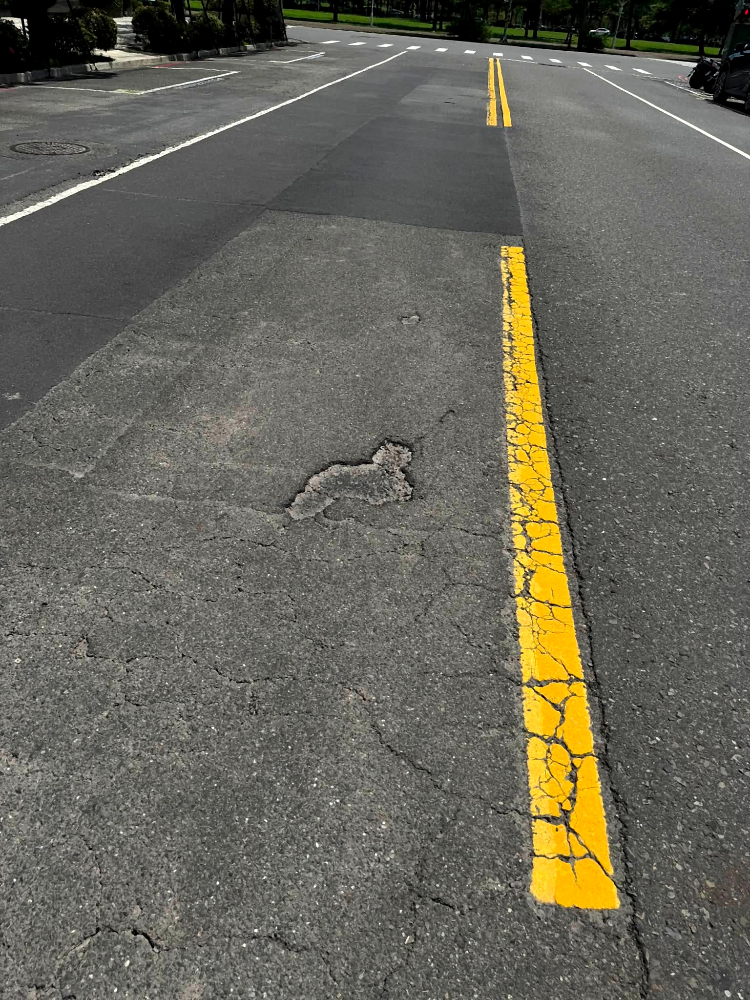
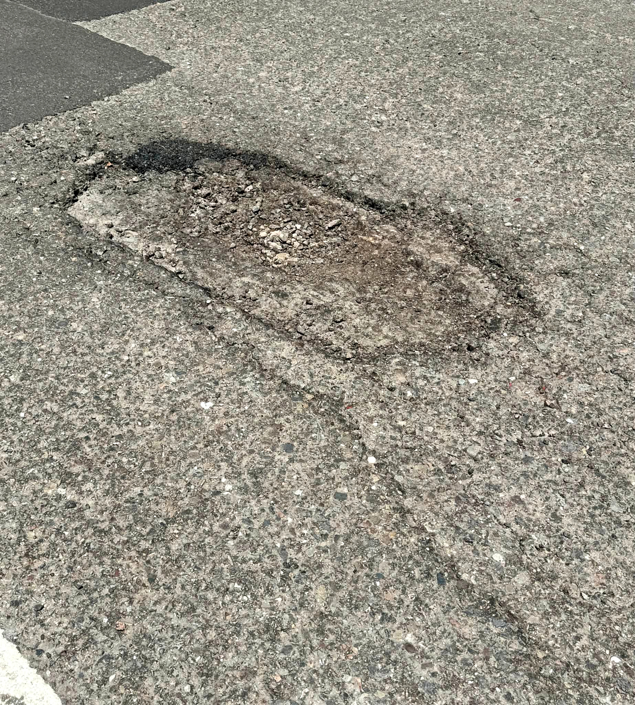
點選您關心的問題類別，直接開啟 LINE 一對一私訊偉修，由偉修親自接案、現場了解、持續追蹤。
路面凹陷、坑洞破損即報即查
視線死角改善、紅綠燈時相建議
水溝異味淤積、汛期排水通暢
暗巷加亮、路燈故障失修通報
社福敬老津貼、長照資源對接
龍華國小通學動線與人行道維護
社區管委會公共議題、里政建言
0981-451-451 偉修親自接聽
這是一篇記錄 53 歲以前走過的路。軍旅紀律、第一線業務、海外跨國管理、為陪伴早產孩子返台創業、創立精品咖啡、十年民防協勤與市政協調、50歲重返校園完成企管學位。每一步踏實走過的歷程，都是今天全心守護龍子里的底氣。
「『偉修，您以前到底是做什麼的？』整理這些老照片時，才發現原來自己已經走了這麼遠。53 歲以前走過的路，有些順、有些跌跌撞撞；有些是自己選的，有些則是人生突然替我轉了方向。但每一段路，都算數。每一步真實踩過的腳印，都是今天能以成熟、穩重與耐煩的心，全心為龍子里服務的底氣。」
事情交到手上，就徹底做好；越是身居要職，越要懂得吃路邊攤肉燥飯的謙卑接地氣。
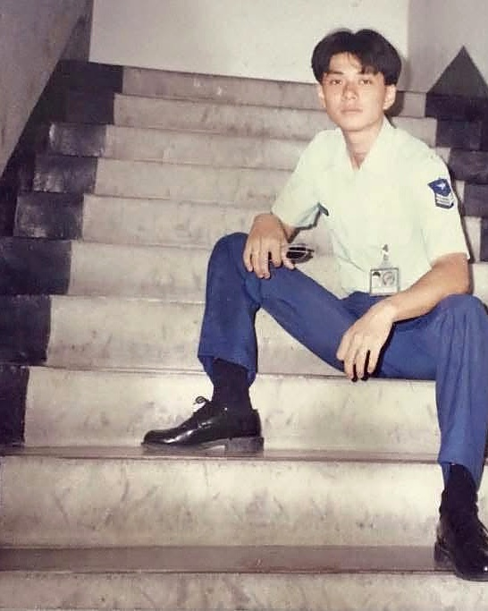
18歲那年穿上空軍制服，擔任通信電子技術工作。在部隊嚴格磨練出嚴謹的紀律與對任務負責到底的性格，退伍時獲頒「空軍總司令獎狀」。既然事情交到手上，就徹底做好，這是偉修一輩子做事的最高標準。
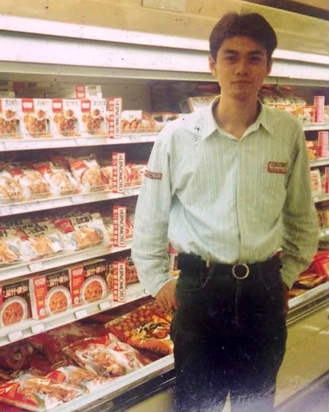
退伍後投入味之素營業部，天未亮就騎著車跑遍超市與傳統市場巡視陳列。最難忘日籍董事長來台視察時毫無架子，帶著團隊在路邊攤吃肉燥飯。那一刻深刻明白：做大事要從最基層的謙卑開始，深入現場才能看清問題。
見過跨國企業的大格局，但家人的生命與承諾永遠第一。懂得取捨，才是真正的擔當。

派駐馬來西亞電子產業約15年，從基層管理到帶領跨國團隊，建立起宏觀組織視野與跨部門溝通協調力；並積極參與吉隆坡台商協會公共事務與台北學校校務協調，累積了厚實的公共組織運作經驗。
事業高峰時半夜接到電話：「孩子早產了，只有800克，情況危急。」偉修毫不猶豫放下海外高薪職位，搭第一班飛機趕回高雄。握著加護病房裡孩子小小的手，深刻明白：家人與責任永遠第一。懂得取捨、把承諾扛在肩上，才是真擔當。
從手機門市到精品咖啡，每天第一線面對鄰里，最懂基層長輩疑難，用咖啡的溫度交流心聲。
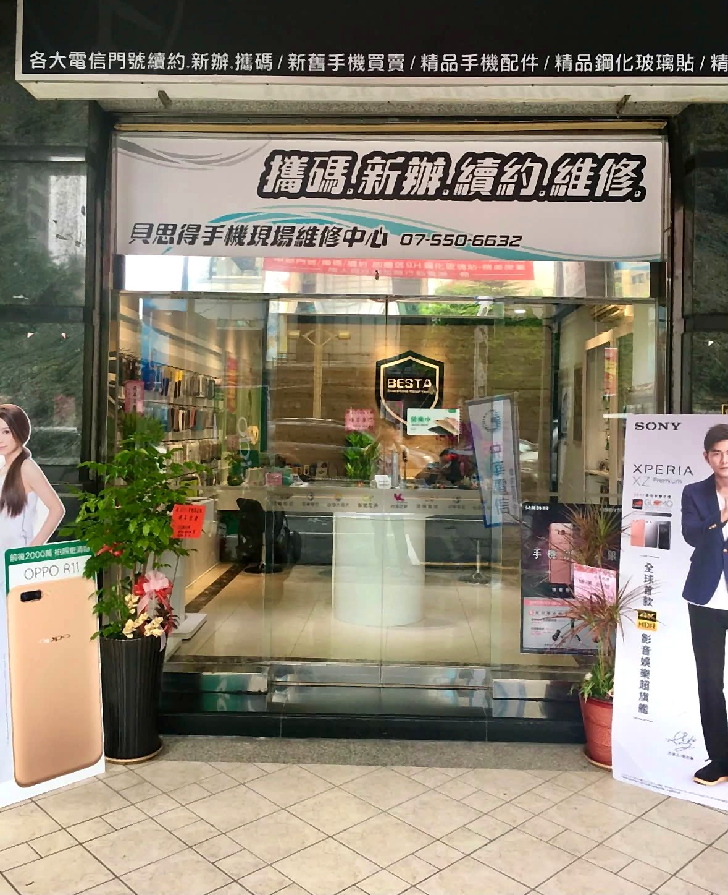
為了專心陪伴孩子復健與成長，在高雄創立通訊門市。每天在店裡協助社區長輩設定手機、排除疑難雜症、主動向鄰里宣導防範電信詐騙與資費陷阱。第一線面對居民日常，磨練出無比的耐心與細心。
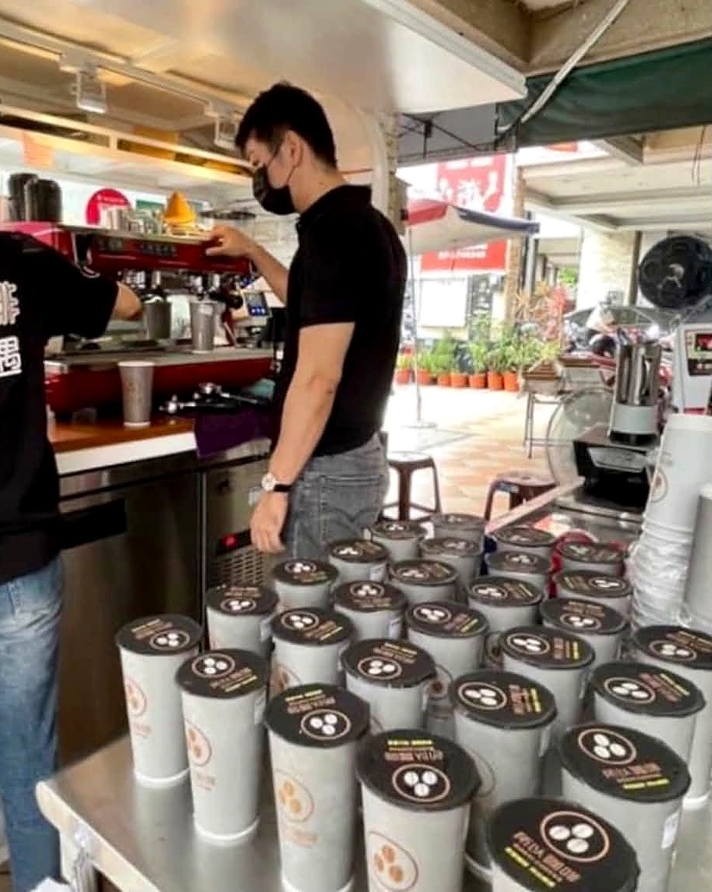
2021年在高雄創立精品咖啡品牌「所以咖啡」。透過每一杯現沖咖啡的香氣與溫度，傾聽來到店裡的每一位鄰里居民生活中的喜怒哀樂。咖啡館成為社區裡最有溫度、最放鬆的心情交流站，把服務的溫度落實在生活日常。
十餘年民防協勤守護治安，立委助理歷練熟稔市政陳情協調；50歲完成企管學位，以飽滿歷練全力為龍子里打拚。
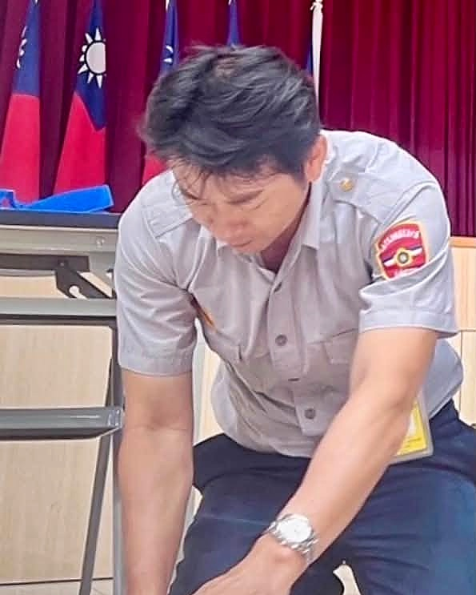
十餘年來持續投入龍華派出所民防協勤，穿著制服巡守鄰里巷弄、熟稔急救維護社區治安；並曾擔任立法委員服務處助理，親赴基層協調市民陳情、對接市政府各局處公文。對地方治安巡守與市府行政溝通流程具備深厚實務經驗。
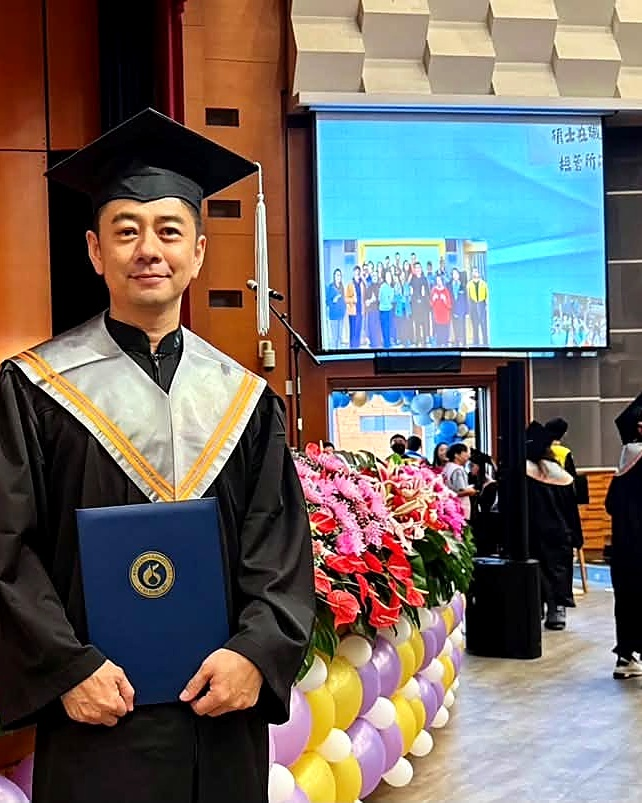
50歲重新回到校園，把年輕時因工作未完成的大學學業念完，順利取得正修科技大學企業管理系學士學位。不畏年齡限制、永遠保持謙卑好學的心。53歲正是人生歷練最飽滿、體力與心智最成熟的黃金年華，準備好用一生的經歷全力為龍子里打拚。
地方上的大小事、生活問題反映，或是您對龍子里未來的寶貴想法，都非常歡迎直接與偉修聯繫。